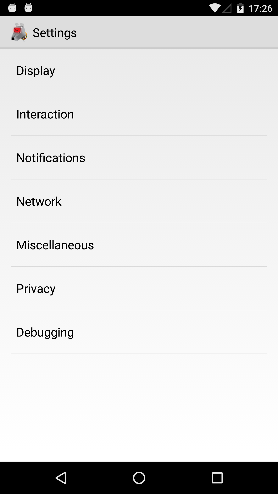

Global Settings
Global settings are account-independent settings. Most of them define how the user interface should look like.

Display
The Display settings provide a lot of flexibility to control the global appearance of the app, as well as each of the main views, such as the account list, message lists and message display.
Global
Language
By default K-9 Mail will display the user interface in the language you're using for your Android system. With this setting you can override the system language, e.g. if your Android version doesn't support your native language but K-9 Mail does.
Theme
Available themes:
- Light (default)
- Dark
Fixed message theme
When using the dark theme messages can look wrong. This is why K-9 Mail allows you to override the app theme.
Enabling this setting will always use the theme configured in Message view theme below for the message view. Not using a fixed message theme means you can select a theme in the menu of the message view.
Message view theme
This setting specifies the theme that is used for the message view.
Available settings:
- Light
- Dark
- Use app theme (default)
Composer theme
This setting specifies the theme that is used when composing a message.
Available settings:
- Light
- Dark
- Use app theme (default)
Font size
K-9 allows you to configure the font-size for various sections of the app.
Animation
Here you can configure whether or not K-9 Mail will use animations. Currently this is only affects the animation when switching from the message list to the message view and back.
Account List
Show account size
This setting controls whether or not the account size is displayed in the list of accounts. Disabling it can speed up the display a bit.
Count search results
Unchecking this will disable counting the number of unread and starred messages in the special accounts (Unified Inbox and All messages).
Hide special accounts
Here you can disable the special accounts Unified Inbox and All messages.
Note: As of K-9 Mail v4.802, third-party applications can only access information about messages in the Unified Inbox. So disabling this can lead to those apps no longer working properly.
Folder lists
Wrap long folder names
When this setting is enabled folder names that are longer than can be displayed in one line in the folder list will be wrapped and displayed using multiple lines rather than being shortened with "..."
Message lists
Preview lines
Here you can specify how many lines of preview of a message you want to see in the message list.
Note: If you set preview lines to 0 and disable contact pictures (see below) you get a special single line message list view.
Show stars
With this you can disable the star icon that is used to indicate flagged messages.
Multi-select checkboxes
Enable this to always show the checkboxes to select a message.
Show correspondent names
Disable this to display email addresses instead of correspondent names.
Correspondent above subject
Show correspondent names above the subject line, rather than below it.
Show contact names
Show correspondent names from Contacts when available.
Colorize contacs
Here you can select the color to use for correspondent names from your Contacts. All other correspondents will be displayed in the default color.
Show contact pictures
Disable this if you don't want to display contact pictures (or place holder images) in the message list.
Colorize contact pictures
If this is checked the place holder images for correspondents with missing contact pictures or ones not in your Contacts will be displayed in different colors. If this is disabled the images will be displayed with a grey background.
Dim messages after reading
Disabling this will display read and unread messages using the same background color in the message list. Then bold text in the first line is the only indicator that a message hasn't been read yet.
Threaded view
Threaded view is enabled by default and groups messages that belong to the same thread. Currently only messages in the same folder are grouped. Specifically, this will not include messages sent by you if those messages are not also stored in the current folder.
Please note that this is not the same as the conversation view you might know from e.g. Gmail.
To add own messages in threaded view: change Sent folder to INBOX in Folder settings under Account settings.
Note: own messages are no longer stored (and synced) in Sent folder.
Show split-screen
This setting allows you to display the message list next to the message view. This is mainly useful for devices with a rather large screen, i.e. tablets.
Available settings:
- Always
- Never
- When in Landscape orientation
Fixed-width fonts
When this is checked a fixed-width font will be used for plain text messages. The display of HTML messages is not influenced by this setting.
Visible message actions
Configure which message actions will be promoted to the first level of the menu in the message view.
Note: Checking an item doesn't mean that this action will be displayed in the action bar. There is only a limited number of actions that will be displayed in the action bar, the rest will move to the so called overflow menu that is accessible using the icon with the three dots.
Messages
Auto-fit message
Enable this to shrink messages to fit the screen width.
Interaction
Start in Unified Inbox
When this setting is enabled K-9 Mail starts in the Unified Inbox.
Note: You shouldn't use this setting. Pressing the launcher icon when K-9 Mail has been started before will restore the app to its old state rather than starting it again. Put a "K-9 Accounts" shortcut on your home screen to always open the Unified Inbox.
Interaction/Gestures
Note: This setting isn't currently used and will be removed soon.
Interaction/Volume key navigation
Here you can specify whether you want to use the hardware volume keys to move up and down in the message list, or move to the previous and next message in the message view.
Interaction/Return to list after delete
When this setting is enabled deleting a message in the message view will return to the message list rather than moving to the previous/next message.
Interaction/Show next message after delete
Enabling this setting always moves to the next message after deleting a message from the message view. When it is disabled you move to the next or previous message depending on your previous travel direction.
Interaction/Confirm actions
Here you can specify which actions should display a confirmation dialog.
You can enable confirmations for the following actions:
- Delete (in message view)
- Delete Starred (in message view)
- Delete (from notification)
- Spam
Notifications
Only some options relating to notifications are shown here. Most of the settings for notifications are under Account Settings, which means you can choose different notification styles for each account.
Quiet Time
You can set a Quiet Time to prevent notification from disturbing your sleep.
Quiet Time starts
Here you can specify the time when notifications will be disabled.
Quiet Time ends
This time specifies the end of the Quiet Time, when notifications will be enabled again.
Show 'Delete' button
K-9 Mail supports deleting messages directly from a notification (on Android 4.1 and newer).
The available settings are:
- Never (default)
- For single message notifications
- Always
Network
Background sync
This setting specifies when K-9 Mail is allowed to synchronize messages in the background.
Available settings are:
- When 'Auto-sync' is checked (see below)
- Always
- Never (This disables mail checking for all accounts regardless of the account settings)
'Auto-sync' is an Android-wide setting that controls accounts that link into the phone. Currently K-9 email accounts do not function in this way. However setting this will make the app reflect the global auto-sync setting.
The configuration of Android's Auto-sync setting may vary depending on your phone's Android version and device manufacturer. On stock Android it's found under: "Settings -> Users & accounts -> Automatically sync data"
- Google provide information about auto-sync and Nexus phones
- Samsung provide instructions for their S6 phones.
- On a technical level this is the result from
ContentResolver.getMasterSyncAutomatically()
Miscellaneous
Use Gallery bug work-around
An old Android version shipped with a faulty Gallery app that didn't show any selectable items. To work around this bug K-9 Mail adds the options "Add image" and "Add video" to the menu of the message composition screen when this setting is enabled.
Note: This setting should be automatically enabled when the faulty Gallery version is found on your device. Most users can ignore this setting and leave it unchecked.
Save attachments to...
Here you can specify a directory where your attachments are saved to when the "Save" button of an attachment is clicked. If a compatible file manager is installed (e.g. OI File Manager) you can simply select a directory. Otherwise you'll have to type in its name.
Privacy
Hide subject in notifications
This setting allows you to hide the subject of a message in notifications.
Available options:
- Never (default)
- When device is locked
- Always
Note: Currently, any value other than Never disables rich notifications (on Android versions that support them). This behavior will most likely change in the future to only disable the notification ticker that is visible from the lock screen.
Debugging
Enable debug logging
Here you enable the logging of extra diagnostic information – e.g. if you're working with a developer to troubleshoot a problem. See the page on logging errors for more information.
Remember to disable debug logging once it's no longer required.
Log sensitive information
By default, sensitive information like passwords are not saved in the logs, but this option enables logging of sensitive information.